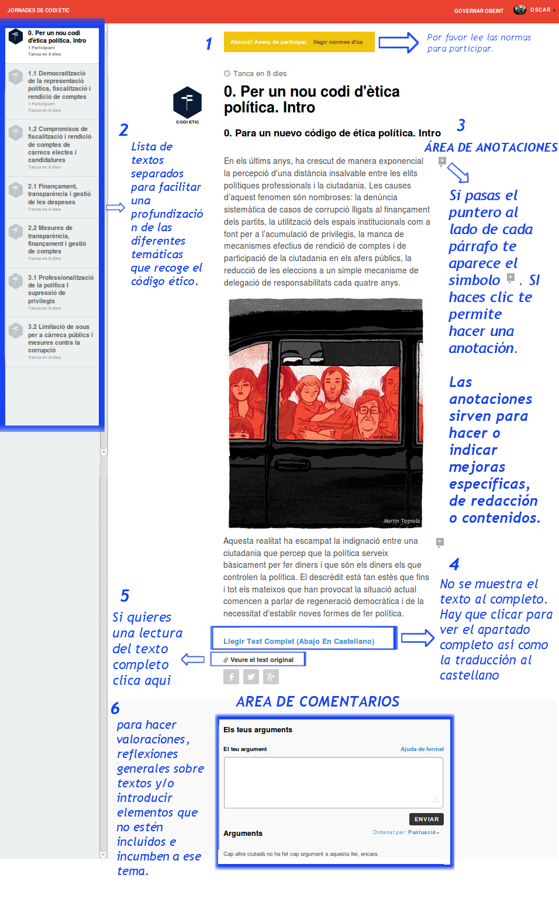
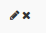
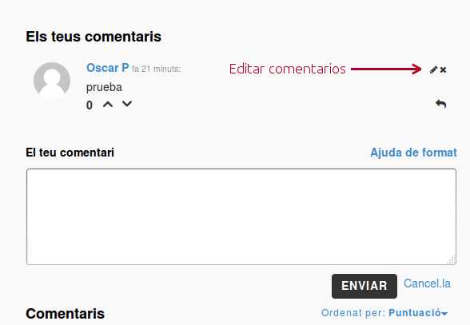

Visión general
1 - En la imagen puedes ver las diferentes áreas participativas.
- Haced especial atención a anotaciones y comentarios.

2 Puedes modificar o eliminar el comentario que hayas subido. Por favor intenta evitar borrar si has generado respuestas.
Pasando el puntero por encima del comentario aparecerá : 
